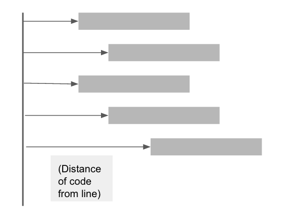

Programming Challenges for visually impaired
This research project marked my entry into the field of accessibility. We had to conduct interviews with visually impaired programmers, take surveys, contact people from online mailing lists. We asked the same open-ended questions to our users - “What are some of the challenges you encounter while programming?” The design problem here was how can we improve the programming workflow of visually impaired programmers. The project had many challenges - one of which included keeping things into mind while doing user research with visually impaired users. This project was outcome of wealth of knowledge imparted by Professor Joyojeet Pal in his class “Technology and Accessibility”.
Research Questions
Our problem addressed the following research questions:
- What challenges do people with visual impairment face while doing programming?
- How can we improve the programming workflow of people with visual impairments?
- What are some issues with existing softwares/IDE’s with regard to accessibility?
Approach
We conducted user interviews with expert programmers who were visually impaired. We also conducted surveys. After that we analysed the issues and needs in the form of affinity wall. We then came up with some design proposals and identified challenges in implementing those solutions.
User Interviews and Surveys
We conducted interviews with expert programmers who were visually impaired. One of them was Screen Reader expert, and other was a Professor. We used “think aloud protocol while conducting interviews. Conducting contextual inquiry with visually impaired was different from that of sighted users. We had to keep certain things in mind like -
- Asking consistently through interaction
- Addressing individuals, not assistants
- Informing about entrance and exit.
- Offering elbow as a guide
- Having blind participants bring their own devices
- Spoon theory - Their time is valuable and we should appreciate them for taking part in the study.
Researched Principles for Learning Experience Design
As my interest in interaction design grew, I researched and collaborated with developers to make several enhancements in the learning experience.
- Using relevant graphics and texts.
- Using animations and interactive simulations for physical procedure.
- Breaking complex information into chunks.
- Learning in a real world context.
- Informative Feedback
- Using mind-maps
User demonstrating guess the number program in python while thinking aloud
Analysis of User Needs
For analyzing user needs, we gathered in data from interviews, surveys and online mailing lists in a form of affinity diagram.
Some of the recurring issues we found out while conducting interviews and surveys were related to 2 main areas - code navigation and indentation feedback.
“[B02] With my setup, JAWS will not announce tabs, unless I navigate by characters.”
“[B01] If I have a block of code indented 3 levels deep, screen readers will never alert the user of the fact.”
“[B01] Announcing indentation as 'tab tab tab' can get very annoying and slow a person down.”
“[B03] I don’t know whether else statement is a part of previous chain of “ifs” or whether it is referring to the big block”
Our Proposal
By identifying patterns from our user research, we found that main issues were related to improper feedback of screen reader in the indentation and unable to navigate code (where am I problem). We proposed a design solution for each problem.
Sounds of varying frequencies for navigation:
We tried using sounds like “beep” with different frequencies and the sounds like “indent 1,2,..”. Each sound represented the distance of the line from the code. .
Content Mapping
After conducting interviews, we found that for most of the general tasks, like email/file general navigation, they used a tree like file structure which helps him map the content on the screen. Taking advantage of this habit, we thought of a similar navigation style in code.
Further Research and Feedback
Further research can be done by analyzing the preferences of different types of sound combinations - (Beeps), (TAB TAB TAB) (Indent 1, Indent 2...and so on). Also, the sound idea didn’t suit to everyone’s style. Some people had habit of memorizing code and they wanted to stick to that way. Due to limitation in time, we were able to interview 3 people and survey 7 people. With more time and resources, more comprehensive research can be done in future. Also, our solution to sound was suitable for users programming in python, which relies on indentation heavily.